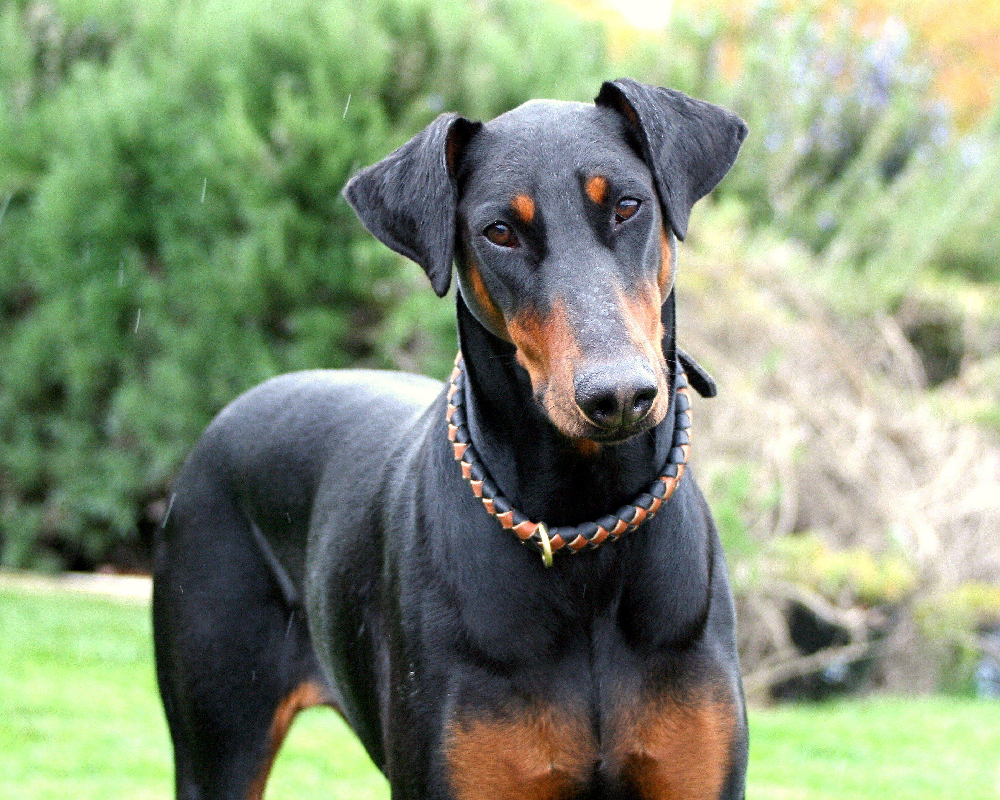

The Dobermann is a medium to large-sized dog breed known for its loyalty, intelligence, and protective nature. Originally bred in Germany in the late 19th century, Dobermanns are often used as guard dogs and are highly trainable.
